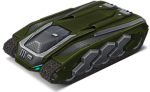

概括
蜂王是三个轻型底盘中的第二个，黄蜂轻甲是第一个。
虽然比它的对手慢，但由于其增加的加速度、转弯速度、重量和尺寸，蜂王能更安全地潜入战斗。
炮塔直接以底盘为中心，可以从机器的任何一侧进行有效战斗。
这一特点也有助于底盘的坚固稳定性，尽管它缺乏牵引力和高速仍然使它容易从悬崖和壁架上滑落。
车库中的描述
轻型底盘。转弯时可以进入短暂的漂移。过速装置允许看到战斗中的所有敌人。
具有空气动力学曲线的轻型底盘。
移动精美流畅，在障碍物和其他坦克之间小心滑动。
导致闪电般快速攻击的侦察行动需要一流的动态属性。
强大的雷达、热能面罩和多通道通信系统使加油机能够探测到战斗中的所有敌方坦克，
全面分析其当前状态，并向盟友发送命令。
此外，数据收集和处理的自动化系统使底盘能够稳定每次射击并击中目标装甲的薄弱点。
这使得“蜂王”成为任何侦察任务和快速打击敌人基地的必备品。
装备改造

过速装置
侦察雷达
皮肤

蜂王标准
蜂王 XT
蜂王遗产
青春蜂王
蜂王超高